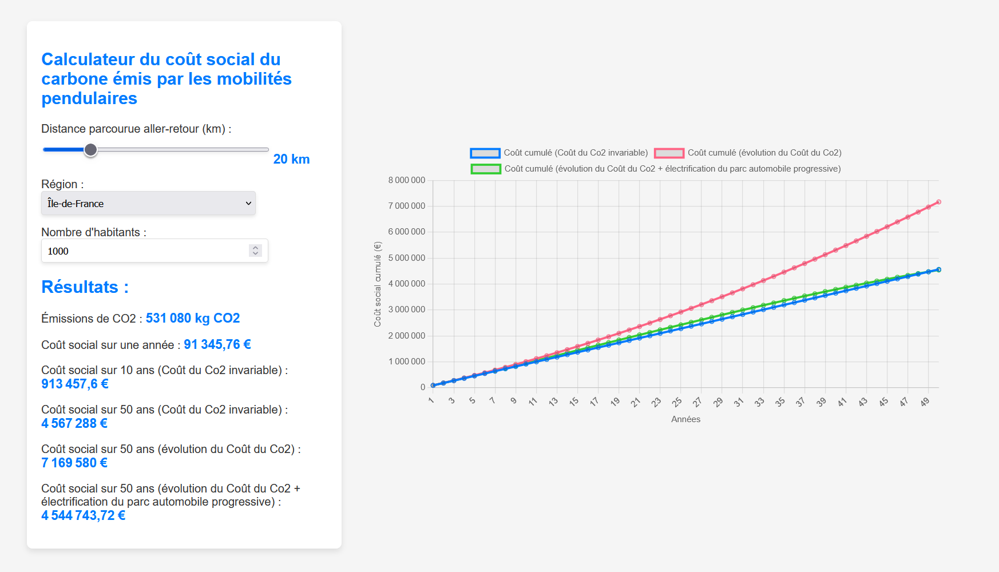
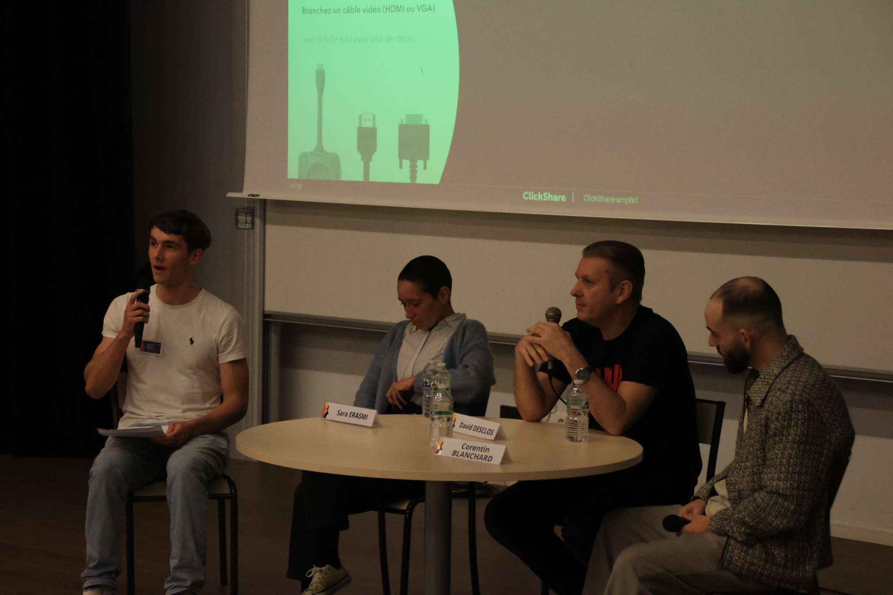
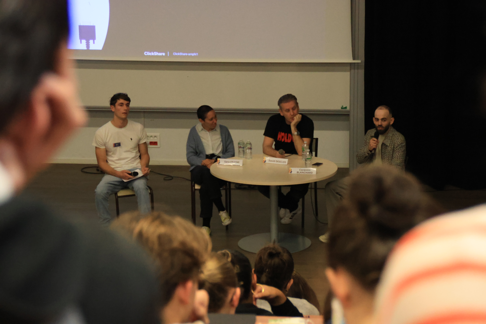
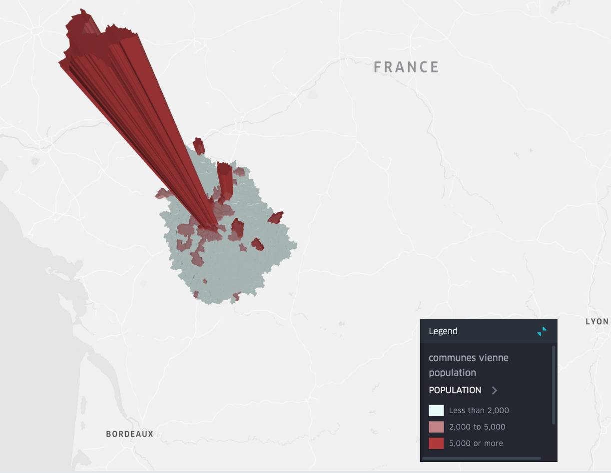
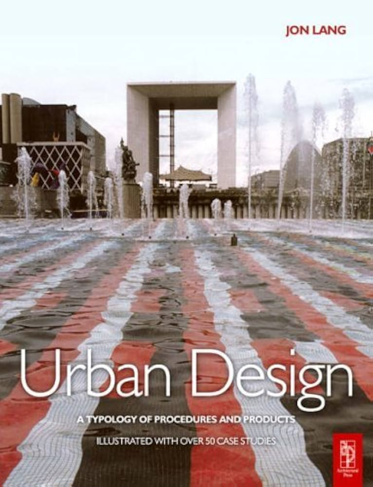
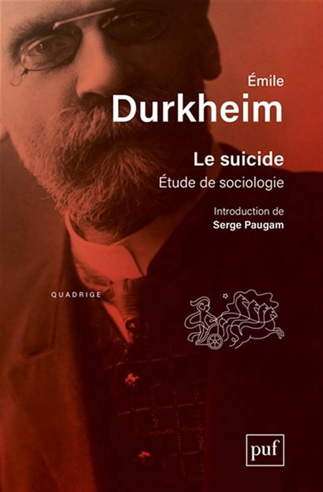

Je suis étudiant en deuxième année de BUT Villes et Territoires Durables à l'IUT Bordeaux Montaigne, avec une passion pour l'aménagement du territoire et l'urbanisme. Mon parcours académique, enrichi par des expériences professionnelles variées, m'a permis de développer des compétences concrètes dans ces domaines.
J'ai eu l'opportunité de réaliser un stage d'un mois au sein de l'agglomération du Grand Châtellerault, où j'ai contribué aux initiatives du programme Action Cœur de Ville, ainsi qu'un stage de deux mois à l'Agence des Territoires de la Vienne, où j'ai travaillé sur des projets stratégiques d'aménagement territorial. Ces expériences m'ont conforté dans mon choix de poursuivre un master en urbanisme pour approfondir mes connaissances et relever les défis des villes de demain.
Curieux et motivé, je suis déterminé à m'investir dans des projets qui façonnent des territoires durables et inclusifs.
Voici l'un de mes projets récents : un Calculateur Carbone qui permet de calculer le coût social de la création de logements en périphérie des villes, en prenant en compte l'impact d'un mode de vie dépendant de la voiture.
Ce projet a été conçu pour sensibiliser aux enjeux de l'étalement urbain et de la transition écologique. Vous pouvez explorer le calculateur en cliquant sur le lien ci-dessous :
Accéder au Calculateur Carbone

Pour développer le Calculateur Carbone, je me suis appuyé sur une analyse de la corrélation linéaire entre l'électrification du parc automobile et la baisse des émissions moyennes de CO₂ par véhicule. Voici l'analyse graphique qui illustre cette relation :
Ce graphique montre une corrélation négative forte (R² = 0,989), ce qui signifie qu'une augmentation du pourcentage de véhicules électriques dans le parc automobile entraîne une réduction significative des émissions de CO₂. Toutefois, grâce à l'outil du Calculateur Carbone, on voit que cette solution ne suffit pas à faire du mode de vie rurbain un mode de vie durable.
Voici une réalisation cartographique en 3D illustrant les mobilités pendulaires sur la ville de Châtellerault, avec les bâtiments colorés selon leur destination :
Cette cartographie interactive 3D, réalisée à l'aide de QGIS, Kepler.gl, geojson.io et Excel, permet d'explorer les habitudes de mobilité domicile-travail en zone périurbaine. Elle met en lumière l'impact de la concentration des bâtiments à usage commercial (issus des données 3D de l'IGN) sur les flux pendulaires, en soulignant comment ces implantations influencent les dynamiques de déplacement quotidien. Les bâtiments sont représentés en 3D, avec une coloration selon leur usage principal : bleu pour les zones résidentielles, vert foncé pour les commerces et vert clair pour les espaces agricoles.
Ce travail cartographique complète le calculateur carbone développé en parallèle, en illustrant sur un support spatial concret les effets territoriaux et écologiques des mobilités pendulaires. L'impact environnemental est estimé à travers un indice économique fondé sur le coût social du carbone par tonne de CO₂, tel que défini par l'INSEE dans son étude de 2023.
L'animation suivante montre ma capacité à utiliser des données simples, telles que les infrastructures et les bâtiments d'un territoire, ainsi que les différentes zones de protection écologique, pour appréhender le territoire sur QGIS :
Dans le cadre du Festisol (Festival des Solidarités), nous avons mis en place au sein de notre IUT une commission thématique intitulée "Évasion culturelle", dont l'objectif central était de promouvoir l'accès à la culture en milieu carcéral. Cette initiative est née de la conviction que la culture peut être un puissant levier d’émancipation, de reconstruction personnelle et de réinsertion sociale. Elle permet aussi d’éviter que la prison ne devienne une école de la récidive, en offrant des perspectives, des outils d’expression et des chemins de transformation individuelle.
En tant que membre actif de cette commission, j’ai eu la responsabilité de concevoir, organiser et animer une table ronde publique consacrée à cette thématique. Cet événement a rassemblé plus d’une centaine de personnes, principalement des étudiant·e·s et des enseignant·e·s de l’IUT, sensibles aux enjeux sociaux liés à l’accès à la culture.
Pour alimenter cette réflexion collective, nous avons eu l’honneur d’accueillir trois intervenants aux expériences complémentaires et au discours engagé :
La table ronde a permis de croiser des parcours de vie, des approches militantes et des initiatives concrètes pour penser l’accès à la culture comme un droit fondamental, y compris derrière les murs des prisons. En tant qu’animateur de ce débat, j’ai veillé à faire dialoguer ces voix singulières tout en gardant un fil conducteur accessible pour le public, favorisant les échanges et la réflexion.


Maîtrise avancée de QGIS pour la création de cartes thématiques et le géotraitement, ainsi que de Kepler.gl pour la visualisation de données géospatiales. Expérience avec ArcGIS (niveau intermédiaire) et Blender pour la modélisation 3D cartographique.

Programmation :
Maîtrise de Tableau pour la création de dashboards interactifs et de Google Data Studio. Compétences en visualisation avec Python (Matplotlib, Seaborn) et R (ggplot2). Capacité à transformer des données complexes en visualisations claires et percutantes pour la prise de décision.

Expertise dans l'analyse des dynamiques urbaines et territoriales, avec une approche combinant méthodologies qualitatives (enquêtes, entretiens) et quantitatives (statistiques spatiales). Expérience pratique acquise lors de stages en agence d'urbanisme et collectivité territoriale.
